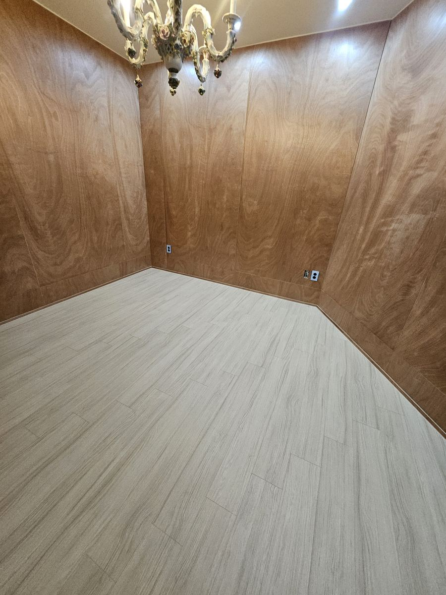
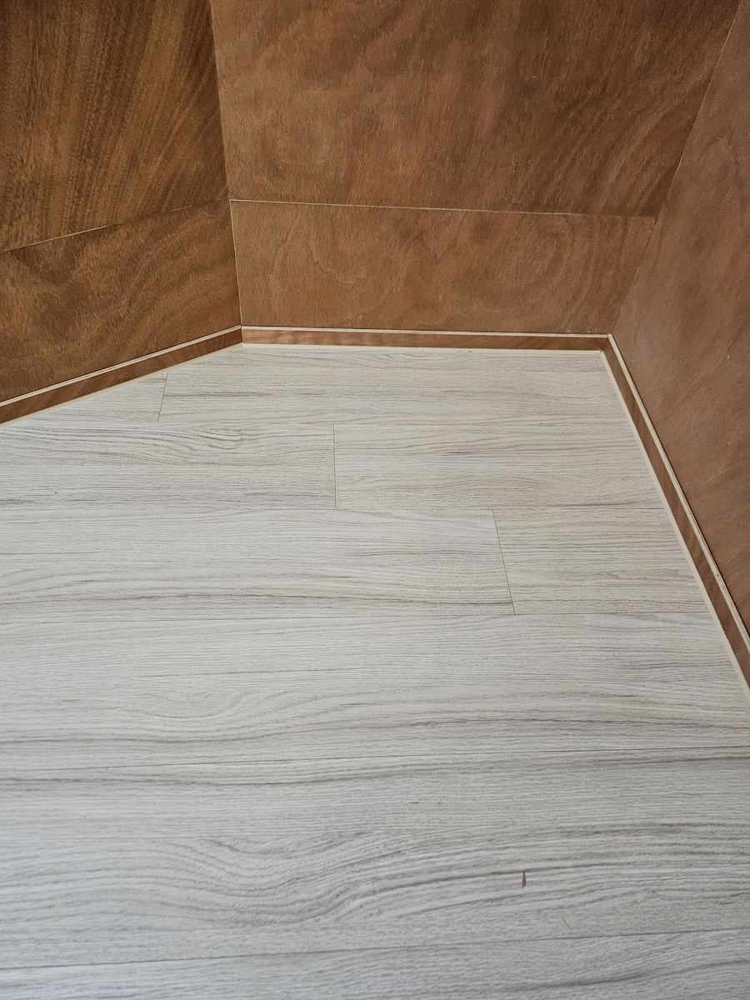
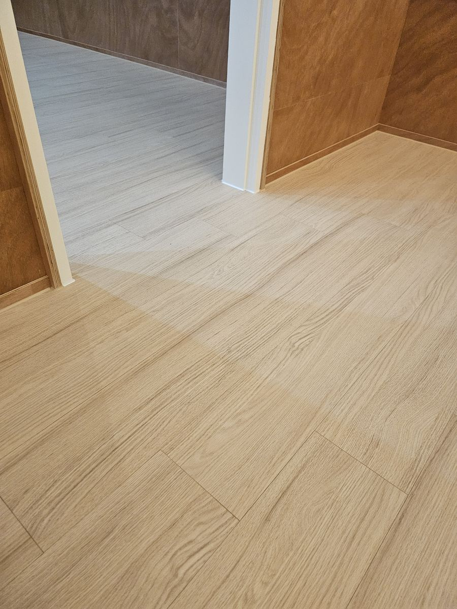

벽 색이 제각각인 현장
진한 합판 벽, 흰 도장 벽, 초록 포인트 벽이 한 집 안에 섞여 있었습니다. 바닥까지 색을 주면 정리가 안 되기 때문에, 어느 벽과 붙어도 무난한 밝은 오크 톤으로 전 공간을 통일했습니다.
30평대 단독주택 2층 전 공간에 강마루를 시공했습니다. 합판 마감 벽과 도장 벽, 포인트 그린 벽이 섞인 현장이라 바닥 톤을 잡는 것이 관건이었습니다.
| 시공일 | 2026년 9월 10일 |
|---|---|
| 위치 | 강원 인제군 인제읍 · 단독주택 2층 |
| 평형 | 30평대 |
| 자재 | 구정마루 그랜드텍스쳐165 — 비비드오크 (1200 × 165 × 7.5T 강마루) |
| 시공 범위 | 거실, 주방, 복도, 방 전체 · 걸레받이 마감 포함 |
| 현장 조건 | 합판 마감 벽, 백색 도장 벽, 포인트 그린 벽이 혼재. 빈티지 도어와 스테인드글라스 창 등 기존 요소 유지 |
진한 합판 벽, 흰 도장 벽, 초록 포인트 벽이 한 집 안에 섞여 있었습니다. 바닥까지 색을 주면 정리가 안 되기 때문에, 어느 벽과 붙어도 무난한 밝은 오크 톤으로 전 공간을 통일했습니다.
빈티지 도어, 스테인드글라스 창, 원목 카운터처럼 집주인이 남기고 싶어 한 요소가 많았습니다. 비비드오크의 차분한 결이 이런 오래된 나무들과 부딪히지 않고 받쳐 줍니다.
복도에서 방으로, 방에서 거실로 넘어갈 때 판재 방향과 이음선이 끊기지 않도록 기준선을 먼저 잡고 시작했습니다. 문턱을 넘어가도 바닥이 하나로 이어져 보입니다.









사진은 시공 완료 직후 현장에서 촬영한 것으로 보정하지 않았습니다. 촬영 시간대(저녁)와 조명에 따라 실제 색보다 노랗게 보일 수 있으니, 색상은 실물 샘플로 확인하시기 바랍니다.
현장 사진은 고객 동의를 받은 곳만 공개합니다. 비슷한 조건의 사례를 보고 싶으시면 상담 시 말씀해 주세요. 평형과 자재가 비슷한 현장 자료를 보내 드립니다.